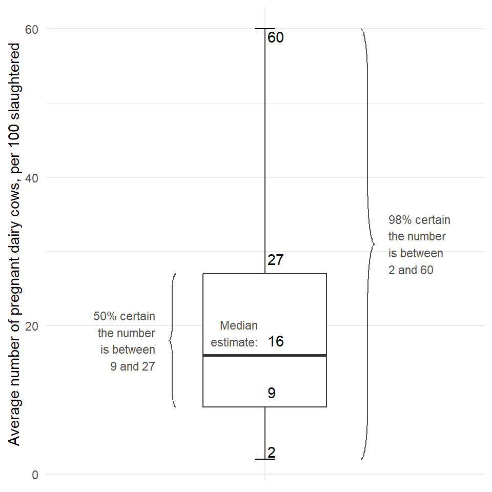
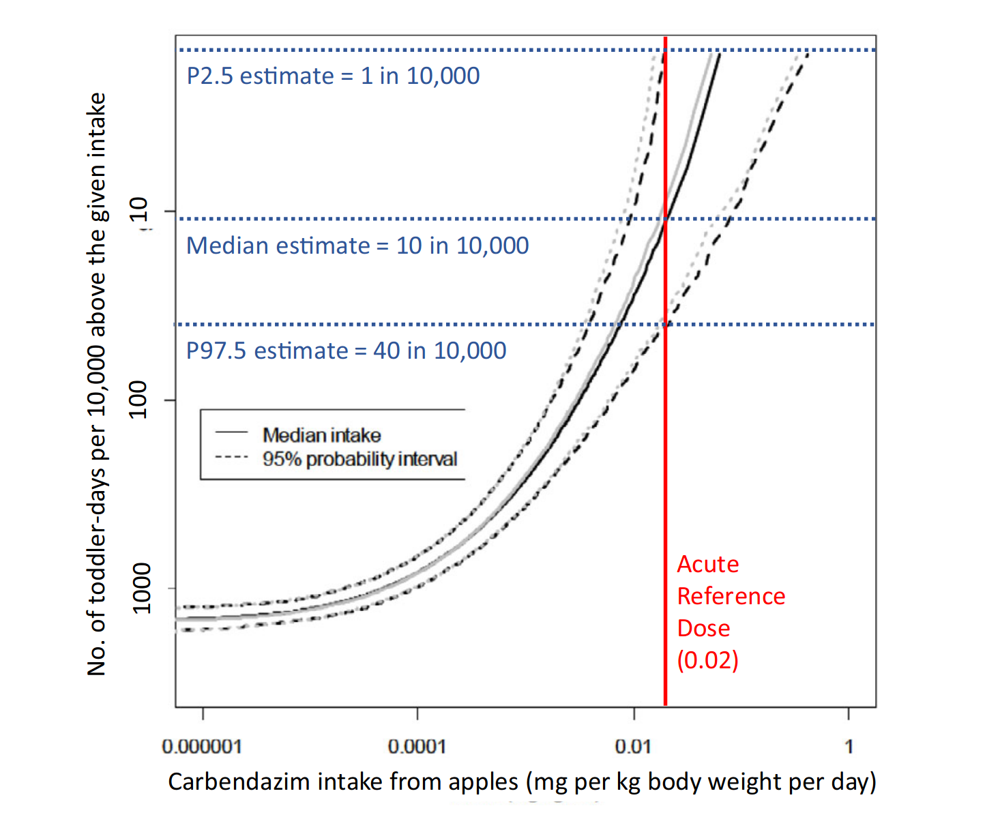

for Assessors
Checklist for identifying messages with associated uncertainty expressions, and specific guidance for their communication:
If an unqualified conclusion is required, follow the guidance for unqualified conclusions (see Question 5 here). If an unqualified conclusion is not required, state the result of the standardised procedure in the form expressed by the assessors. Also communicate the uncertainty expressions for this message, consulting the respective guidance boxes.
Report the conclusion as expressed by assessors and state that a standardised assessment procedure was followed that takes account of standard uncertainties, and no non-standard uncertainties were identified.
- State that uncertainties exist, using the wording in the scientific output.
- Include in the message a brief description of the sources of uncertainty that have the biggest impact on the respective key messages. (If necessary, consult the assessors to identify these.)
Example: “The experts identified limitations in the data on exposure and toxic effects of ZEN and its modified forms, for example (…)” Based on EFSA 2017;15(7):4851
- When documenting sources of uncertainty in the assessment report, assessors should include brief text descriptions suitable for subsequent use in communications to informed audiences without using specialist technical terms. - Assessors should try to identify which sources of uncertainty have most influence on their conclusions, either by qualitative assessment or by influence or sensitivity analysis UA.
- Where there is conflicting evidence on an issue, this is a source of uncertainty which must be documented and taken into account in uncertainty analysis, and may be assessed using a weight of evidence approach WE.
- Avoid altering the wordings used by assessors to describe the direction and/or degree of uncertainty, or factors contributing to uncertainty (Box 2). Always check the rewording with the assessors if you do.
- State clearly what outcomes and conditions this expression of uncertainty refers to.
- Make clear that any uncertainty referred to in the communication has been taken into account in the assessment conclusion.
- Before communicating the uncertainty expression, describe a few examples of the evidence/data that were considered and the uncertainties affecting the assessment.
- Optionally, mention specific methods that were used in evaluating the uncertainty.
- Optionally, mention factors contributing to the overall uncertainty, including the relative importance of individual sources of uncertainty and things like the relevance and reliability of evidence (e.g. in weight of evidence assessments, see WE).
- Clearly distinguish individual sources of uncertainty from overall uncertainty about the assessment conclusions.
Example: “The Panel noted that a high proportion of measurements of ZEN and its modified forms in feed were below the limit of detection, leading to very high uncertainty when estimating exposure” Based on EFSA 2017;15(7):4851
- If using “+” and “−” or other symbols to indicate the direction and magnitude of uncertainty, accompany these with quantitative definitions of their meaning, as discussed in SO, Annex B5.
- Describe the main sources of uncertainty in more detail, but concisely, following the guidance in Question 2 above.
- Inconclusive assessments are especially likely to include options or requirements for obtaining further data. Communicate these as instructed in UC Section 3.1.6.
Example: “EFSA’s experts could not reach a conclusion on the risk for cattle, ducks, goats, horses, rabbits, mink and cats due to limitations in available data on exposure and toxic effects of ZEN and itsmodified forms, for example (…)” Based on EFSA 2017;15(7):4851
- When explaining why the assessment is inconclusive, include a description of the key sources of uncertainty that are responsible for this.
- If the assessment is not totally uncertain, try to express what the science can say and quantify the uncertainty unless the risk manager/legislation requires that only unqualified conclusions be given.
- Report the unqualified conclusion for this message using the same wording as the assessors.
- Optionally, describe briefly how the assessment was made (i.e. what evidence and methods were used to arrive at the conclusions).
- Briefly describe some examples of uncertainties affecting the assessment for this message, as identified in your completed template, consulting Box 4 for guidance on how to communicate this.
- If the assessment contains any verbal or numerical expression of the impact of the uncertainties as identified in your template, follow the respective guidance in Boxes 6–9 below.
- Say that the assessors took the uncertainties into account when reaching their conclusion(s) for this message.
Example: “Following the standard assessment procedure (or ‘Using the evaluation system agreed for contaminants in feed’), experts estimated that high exposure to feed containing ZEN is below the reference value for a health risk for sheep, dog, pig and fish, and well below the reference value for chicken and turkeys. They therefore concluded that the exposure to feed containing ZEN ‘in farm situations’ is a low health risk for sheep,dog,pig and fish,and an extremely low health risk for poultry. In reaching this conclusion, the experts took account of limitations in the data on exposure and toxic effects of ZEN and its modified forms, for example (…)” Based on EFSA 2017;15(7):4851
- Provide the information needed for the FAQ required at the entry level communications (see above).
- Specify what level of certainty is associated with each unqualified conclusion. Risk managers can explain why that level of certainty is appropriate for decisionmaking, if considered necessary. Make this information available to interested parties in suitable ways, e.g. in an FAQ and/or in documentation or guidance on the assessment methodology.
- State clearly what the probability refers to, including whether it refers to a numerical estimate or a qualitative conclusion. When the probability refers to a numerical estimate, also state the range of the quantity that the probability refers to (see example below).
- Before giving the probability, describe a few examples of the evidence/data that were considered and the uncertainties affecting the assessment, and state that the experts took these into account when assessing their level of certainty.
- Optionally, mention specific methods that were used in quantifying the uncertainty, e.g. modelling, statistical analysis, expert knowledge elicitation (EKE), or a combination of these.
Example: “The Panel performed its assessment using a mathematical model of the entry of nematodes into the EU and their establishment and spread in greenhouse tulips. Uncertainty on the factors represented in the model was quantified by expert judgement, taking into account the limitations of the available data. The Panel estimates…[continue as for entry level]” Based on EFSA 2017;15(8):4879
- No specific guidance for assessors other than the general guidance for assessors in UC Section 3.2.
- State clearly what the probability refers to, including whether it refers to a numerical estimate or a qualitative conclusion. When the probability refers to a numerical estimate, also state the range of the quantity that the probability refers to.
- An approximate probability may comprise a range of probabilities chosen by the assessors from the approximate probability scale Table 1, or a different range of probabilities specified by the assessors.
- Always communicate the quantitative range of probabilities because this expresses the assessors’ conclusion without ambiguity. If a verbal expression is also used, present the quantitative probability first (e.g. ‘66–90% certain (likely)’) because it has been shown that this order leads to more consistent understanding than if the verbal expression is presented first (see UC Section 3.1)
- To avoid inconsistency and misunderstanding, do not use the verbal terms in Table 1 to refer to any probabilities or ranges of probabilities other than those shown in this table.
- Before giving the probability, describe a few examples of the evidence/data that were considered and the uncertainties affecting the assessment, and state that the experts took these into account when assessing their level of certainty.
- Optionally, mention specific methods that were used in quantifying the uncertainty, e.g. modelling, statistical analysis, expert knowledge elicitation (EKE), or a combination of these.
Example: “Experts began work on the Scientific Opinion after the 2015 EU summary report on foodborne zoonotic diseases identified an increasing trend of listeriosis over the period 2009–2013. The Panel performed a statistical analysis, which confirmed the increasing trend, and developed a mathematical model of the factors influencing the incidence of infections. Considering the modelling results and the degree of support from indicator data, the experts…’ [continue as for entry level]” Based on EFSA 2018;16(1):5134
As for the entry level with the following differences:
- Before giving the results, describe examples of the evidence/data that were considered and the uncertainties affecting the assessment, and state that the experts took these into account in their assessment.
- Optionally, mention specific methods that were used to quantify the uncertainty, e.g. modelling, statistical analysis, expert knowledge elicitation (EKE), or a combination of these.
- Consider providing a visual representation of the uncertainty if this is expected to be useful for understanding, e.g. to aid understanding of the distribution of probability around the central estimate. Use a box plot for this at the informed level. (Do not use graphical representations of full distributions, such as PDF or CDF, in communications for non-technical audiences because these are easily misunderstood.) When using a box plot, explain clearly that it represents the uncertainty, as they are commonly used to represent variability and people may misinterpret them in that way. When including a graphic, provide this in addition to the entry level representation (see above) and not instead of it.
- Label the graphs (including axes, legends, and units) appropriately so that, as far as possible, people will understand them on their own. Accompany every visual with sufficient textual explanation that the informed-level audience will understand it.
Example: “Ten experts from different EU countries each surveyed a sample of slaughterhouses in their country to gather information on the prevalence of animals being pregnant at slaughter in 2015. Six of those experts used the survey results and other available evidence to estimate the average prevalence in Europe for different species in 2015, taking account of the uncertainties involved. The Panel’s conclusions are based on the results. Experts estimated… [continue as in entry-level communication]” Based on EFSA 2017;15(5):4782
When communicating using box or box-and-whisker plots:
- Always accompany box plots with explanations of each element they contain (including central estimate, box and whiskers).
- If there is a value or quantity that is of particular interest to risk managers or the public (e.g. a regulatory/reference value), communicate the probability of the true value being above or below this (depending which is of interest) alongside the box plot, following the specific guidance in Question 6.

Example: “Figure 1 is a box plot summarising the combined judgement of six experts about the average number of pregnant dairy cows per 100 cows slaughtered in the EU in 2015. The horizontal line inside the box is the median estimate: the true average value is considered equally likely to be above or below this estimate. The box and whiskers represent the experts’ collective uncertainty about the EU average in 2015 (not variation between samples of animals). There is 50% certainty that the true average is in the box and 98% certainty it is between the whiskers. There is still a 2% chance that the true average is outside the whiskers” Based on EFSA 2017;15(5):4782
- Include a table of the distribution and a box plot.
- Provide P5, P25, P50, P75 and P95 ranges. In addition, if there are values of specific interest to the public/risk managers (e.g. a reference dose/value), then provide the probability for the true value being above or below this (depending which is of interest, e.g. a health concern).
- State which sources of uncertainty are considered in the distribution and provide a qualitative or quantitative description of uncertainties not considered in the distribution (e.g. uncertainty about the quality and representativeness of entry data, assumptions in modelling exposure or assumptions about the distribution of different parameters of a model).
- State clearly how each distribution was obtained, and in particular whether it was derived by statistical analysis, mechanistic modelling, expert judgement or a combination of these.
Optional:
- Provide a PDF graph of the distribution if communicating only the quantiles would fail to indicate something important about the distribution, e.g. bimodal, skewed.
- Accompany the PDF with a CDF graph of the distribution if this is useful for technical readers of the assessment (e.g. to enable them to read off approximate estimates for quantiles other than those reported explicitly). Using the same horizontal scale, plot the CDF above the PDF and clearly mark the location of the central estimate (and optionally the P5, P25, P75 and P95) on both curves.
- Accompany a PDF or CDF with an explanatory text expressed in the simplest terms possible. If there is a value or quantity that is of particular interest to risk managers or the public (e.g. a regulatory/reference value), explicitly mark it on both curves. Explain clearly that the distribution represents uncertainty about the quantity of interest, for which there is a single true value, as distributions are more commonly used to represent variability and people may misinterpret them in that way.
Example: “The red line in Figure 2 shows a probability distribution quantifying uncertainty about how many dairy cows out of a hundred on average are pregnant when slaughtered in the EU in 2015, i.e. the prevalence of being pregnant when slaughtered. The height of the red curve shows the relative likelihood of the prevalence values in each part of the horizontal axis. The central (median) estimate is 16 out of 100, with 50% certainty that the European average for 2015 is between 9 and 27, and 98% certainty it is between 2 and 60 (as shown on the graph)”.
- Before giving the results, describe a few examples of the evidence/data that were considered and the uncertainties affecting the assessment, and state that the experts took these into account in their assessment.
- Optionally, mention specific methods that were used in quantifying the uncertainty, e.g. modelling, statistical analysis, expert knowledge elicitation (EKE), or a combination of these.
- Provide a visual representation of the uncertainty if possible, especially if the uncertainty information is part of the key messages. Use a box plot for this showing median, P5, P25, P75 and P95 for the specific result(s) selected from the 2D distribution. Ask the scientific officer to provide the box plot for the selected result, and communicate it as indicated in Quesion 8.
- Do not use graphical representations of full 2D distributions in entry or informed level communications as many people misunderstand them.
Example: “The Panel developed a mathematical model of the exposure of toddlers to carbendazim in apples and apple products. They used UK data on the occurrence of carbendazim in apples and on consumption of apples and apple products by toddlers. The model computed different eating patterns among toddlers by simulating apple consumption and carbendazim intake for 10,000 ‘toddler-days’ (10,000 random samples from a survey of daily apple consumption by UK toddlers, including records where no apples or apple products were consumed). The simulation also calculated five types of uncertainty affecting the model, e.g. limited measurements of occurrence and consumption, limitations in the precision of the occurrence data. Using this model, the Panel estimated that the number of ‘toddler-days’ in which more than the safe level for carbendazim is ingested from apples and apple products is 10 per 10,000 toddler-days. However, this takes account of only the five sources of uncertainty that were quantified: other uncertainties were taken into account separately by expert judgement” Based on EFSA 2007;5(8):538
Note: after the above text provide information on the experts’ judgement about other uncertainties which the model did not quantify, then go back to to this Questionnaire to identify the type of expression used and locate the corresponding specific guidance for communication.
- Provide a box plot and/or relevant table containing quantiles for selected results from the distribution. • Provide a description of the relative magnitude of variability and uncertainty.
- Consider including a graphical representation of the 2D distribution in the technical-level communication (EFSA scientific output). When this is carried out, proceed as follows:
- Use a 2D CDF rather than a 2D CCDF unless there are strong reasons for using the latter, as there is some evidence that CCDFs are less well understood.
- Ensure the graph is well formatted, with clear labelling of axes and values, and markers to show the specific results that were selected for use in the entry-level communication (see above). If helpful for communication, also request a box plot for the selected result and display it alongside the 2D graph.
- Provide sufficient textual explanation for the 2D graph so the intended audience will understand it.
- Explain that the 2D graph represents both variability and uncertainty for the quantity of interest. Consider whether it is helpful to include accompanying text on the relative magnitudes of variability and uncertainty and, if so, request this from the scientific officer.

Example: “A graph showing the results of the model for the 2D probability assessment is presented in Figure 3. Thehorizontalaxisis the amount of carbendazim from apples and/or apple products ingested per toddler-day : the vertical solid red line shows the safe level for this. The vertical axis is the number of ‘toddler-days’ per 10,000 on which carbendazim intake exceeded any given level on the horizontal axis. The median estimate for this is shown by the solid curve: each point on the curve shows the number of toddlerdays (on the vertical axis) on which ingestion of carbendazim exceeded the level shown below that point on the horizontal axis. The dashed curves show the upper and lower 95% confidence interval for the estimates: i.e. there is 95% certainty that any selected estimate lies between the dashed curves. However, this takes into account only the five sources of uncertainty that were quantified: other uncertainties were considered separately by expert judgement. From the results shown in the graph, the Panel estimated that the number of toddler-daysonwhichmorethanthesafelevelforcarbendazimisingested from apples and apple products is 10 per 10,000, and is 95% certain the number is between 1 and 40 per 10,000. These results are indicated by the horizontal dotted lines shown in the graph’.” Based on EFSA 2007;5(8):538
Note: after the second paragraph above, provide information on the experts’ judgement about the other uncertainties, go back to this Questionnaire to identify the type of expression used and locate the corresponding specific guidance for communication. Note: EFSA outputs rarely use 2D graphs. The graphical example in Figure 3 is unusual because the vertical axis is inverted. Also, the example contains a second distribution (shown in grey) that is not referred to in the text above. Take care to use a format that facilitates understanding of the key results.